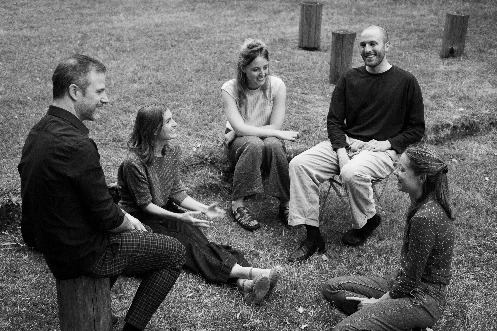

1 / 3

2 / 3

3 / 3

In de voorstelling Kruimels gaan barokmuziek, woord en live electronics een spannend gesprek aan met elkaar over verdwalen: Mona Thijs voert in haar zelfgeschreven teksten iemand op die de weg probeert kwijt te raken in een landschap dat steeds magisch realistischer wordt. Live electronics-muzikant*** Orlan Ghekiere creëert een elektronisch soundscape met field recordings die hij maakte op tochten zonder eindbestemming en barokensemble Kapellmeister brengt werk van Buxtehude, Telemann, J. S. Bach en Schmelzer: muziek waarin de zoekende voetstappen van de jonge Bach echoën, die een staptocht van honderden kilometers ondernam, dwars door de Duitse bossen, op weg naar zijn grote voorbeeld Buxtehude. Kruimels zoekt het punt op waarop je rond je kijkt, een vreemde vogel hoort en denkt: ik ben verdwaald, en hoe erg is dat eigenlijk?
***Tijdens de voorstelling bestuurt Orlan live het muzieksoftwareprogramma Ableton. Enerzijds gebruikt hij zelfgemaakte geluidsopnames als sferische klanklaag: opnames van lange natuurtochten, de roep van een stern, het gekraak van ijs, de stuwende bassen van een dorpsfeest. Anderzijds vervormt hij die eigen geluidsopnames - een windhoos of een eenzame saxofoon - door ze uit elkaar te trekken tot muzieknoten. Vervolgens bespeelt hij die noten, net zoals je een melodisch instrument bespeelt.